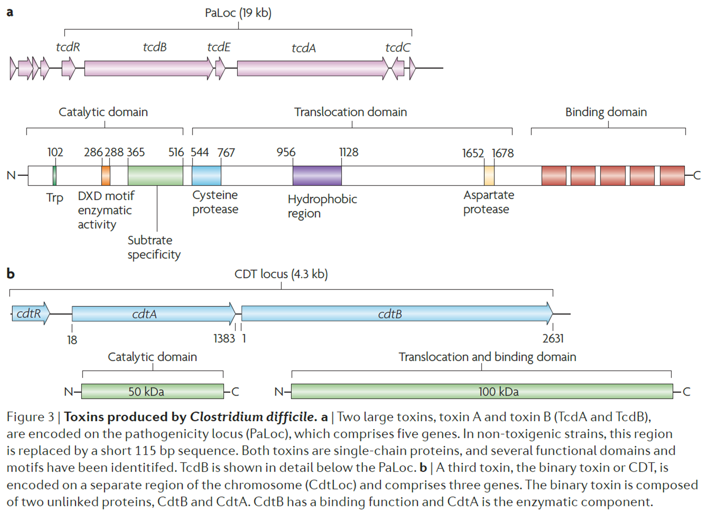
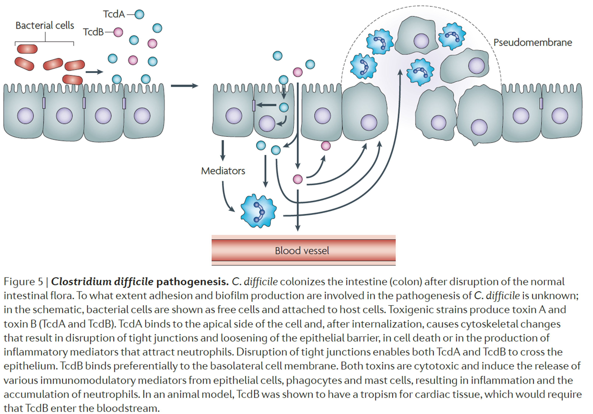

3 Virulence mechanisms, environmental persistence and survival
C. difficile’s pathogenicity is primarily driven by its ability to produce toxins that damage host tissues, initiate inflammatory responses, and disrupt the intestinal epithelium. The major toxins involved include TcdA and TcdB, and in certain hypervirulent strains, the binary toxin CDT.
Other than virulence factors, C. difficile employs various non-toxic factors for colonization, adherence, and survival within the gut. These mechanisms enhance its pathogenicity and serve dual purposes, promoting both host infection (increase colonization resistance) and survival in external environments. This overlap is crucial to C. difficile’s ability to thrive in healthcare settings and facilitate its transmission through community and hospital surfaces, air particles, and medical devices.
3.1 Toxin production
Toxin production in Clostridioides difficile plays a critical role in its pathogenicity and infection dynamics. While these toxins facilitate nutrient availability and reduce competition by disrupting gut cells, excessive production leads to severe gut damage, inflammation, and potential loss of the bacterial niche. This disruption can hinder C. difficile persistence in the gut, initiating cycles of infection and clearance as the host immune response becomes activated. Toxin expression is influenced by genetic and environmental factors that modulate the bacteria’s virulence, with therapeutic strategies targeting these toxins to mitigate symptoms and reduce recurrence risk in CDI.
3.1.1 Major Toxins: TcdA and TcdB
3.1.1.1 Genetic Basis (Pathogenicity Locus, PaLoc)
The pathogenicity locus (PaLoc) encodes toxins A (TcdA) and B (TcdB), which are the primary virulence factors for C. difficile. This locus typically contains five genes: tcdA (encodes TcdA), tcdB (encodes TcdB), tcdR (a positive regulator), tcdE (possibly involved in toxin export), and tcdC (a negative regulator).
Variations in the PaLoc influence toxin levels among strains, affecting infection severity. Mutations in tcdC in hypervirulent strains disrupt normal regulation, leading to increased toxin expression and virulence.
3.1.1.2 Structure and Function
TcdA and TcdB, classified as large clostridial toxins, have four main domains: glucosyltransferase domain (GTD), autoprocessing domain, translocation domain, and receptor-binding domain.
Their glucosyltransferase activity targets RHO GTPases in host cells, causing cytoskeletal disruption, cell rounding, and cell death. This activity compromises gut barrier integrity increases permeability, and induces inflammation.
3.1.1.3 Mechanism of Action
TcdA: Known as an enterotoxin, TcdA binds to carbohydrates on colon epithelial cells, leading to fluid accumulation, inflammatory responses, and cell death. It initiates tissue damage and provides nutrient release, aiding bacterial colonization.
TcdB: Acts as a potent cytotoxin and binds to host receptors like chondroitin sulfate proteoglycan 4, causing severe cellular disruption. TcdB is essential for colitis and severe disease, as strains without TcdB are non-pathogenic. Conversely, strains with TcdB but lacking TcdA can still cause colitis.
3.1.1.4 Regulation of Toxin Expression
TcdR functions as an alternative sigma factor, activating toxin gene transcription, particularly in stationary growth phases.
TcdC serves as a negative regulator during exponential growth. Hypervirulent strains, such as BI/NAP1/027, often harbour mutations in tcdC that dysregulate toxin expression, contributing to enhanced pathogenicity.
3.1.2 Binary Toxin (CDT)
3.1.2.1 Presence in Hypervirulent Strains:
- CDT, an additional toxin produced by certain strains like ribotype 027, consists of two subunits, CdtA and CdtB. CdtA has ADP-ribosyl transferase activity targeting actin, weakening host cell structure, while CdtB forms pores facilitating CdtA’s entry.
3.1.2.2 Impact of CDT:
- Although CDT alone is not sufficient to cause disease, it enhances C. difficile’s adhesive capacity, potentially aiding in immune evasion and increasing virulence in severe or recurrent infections.
3.1.3 Toxin-Triggered Inflammatory Responses
Host Immune Response
TcdA and TcdB induce cellular damage, prompting the release of pro-inflammatory cytokines and chemokines. These signals recruit immune cells, exacerbating inflammation in the colon and causing CDI symptoms, such as diarrhoea and colitis.
RHO GTPase Glycosylation by TcdB activates inflammasomes within host cells, leading to the release of interleukin-1β (IL-1β) and promoting a strong inflammatory response that worsens tissue damage.
3.1.4 Regulation of Toxin Production
3.1.4.1 Environmental Cues
Nutrient availability, bile acids, and gut pH can influence toxin expression. Stress conditions, like nutrient limitation, prompt C. difficile to upregulate toxin production, disrupting host cells to release nutrients for bacterial sustenance.
3.1.4.2 Genetic Diversity and Strain Variability
Variability within the PaLoc, particularly in regulatory genes like tcdC, results in differing toxin production levels among strains. Hypervirulent strains often have dysregulated toxin expression, contributing to more severe disease outcomes. Different ribotypes (e.g., RT027, RT078) produce variable combinations of TcdA, TcdB, and CDT, while non-toxigenic strains lack these genes entirely.
3.1.4.3 Detection of Toxins
Protocols such as multiplex PCR and whole genome sequencing (WGS) identify the presence of virulence genes (tcdA, tcdB, cdtA, cdtB), aiding in differentiating between toxigenic and non-toxigenic strains and tailoring infection control strategies.
3.1.4.4 PaLoc and Toxin Gene Fragments
The PaLoc includes ten fragments, but toxinotyping primarily analyzes the B1 and A3 fragments. These fragments contain regions of the tcdA and tcdB toxin genes.
Comparison with a Reference Strain: Strains are compared to the reference strain C. difficile VPI 10463, revealing variations that define 27 toxin types (I to XXVII).
3.1.4.5 Types of PaLoc Variations
Minor Changes: Some toxin types have small deletions or alterations in repetitive sequences, particularly in the A3 region of the tcdA gene.
Major Variations: In other toxin types, changes are distributed across the entire PaLoc, resulting in major toxin types. These often correspond well with other typing methods like ribotyping.
3.1.4.6 Variant Toxin Production
- Variant toxin genes may produce toxins with altered properties or result in the absence of one or both toxins. For example, TcdA–TcdB+ strains produce only TcdB, the first discovered variant type.
3.1.4.7 Clinical Relevance
Association with Disease Patterns:
- Specific toxin types can sometimes correlate with disease characteristics or specific patient populations during outbreaks. However, a toxin type does not generally predict disease severity.
- Increased Human Variant Strains:
- Historically, many variant toxinotypes were found in animal isolates, while human isolates were mostly non-variant. Recently, the proportion of variant strains in humans has risen, and some variant toxin types (e.g., toxin type III or ribotype 027, and toxin type VIII or ribotype 017) have been linked to major outbreaks worldwide.

3.2 Sporulation
Stages of Sporulation: Sporulation is a four-step process in C. difficile:
Initiation: Triggered by environmental stress, leading C. difficile to decide to form spores.
Development: The bacterium begins forming the spore structure, sequestering essential DNA and proteins.
Maturation: The spore develops a tough, resistant coat, enabling survival under adverse conditions.
Release: The mature spore exits the mother cell and becomes capable of enduring extreme environments and eventually infecting new hosts
Benefits: Sporulation allows C. difficile to persist outside the host and resist environmental factors like heat, desiccation, and antimicrobials, making it central to transmission and survival.
In-Host Function: Sporulation allows C. difficile to survive in the host when conditions become hostile (e.g., low nutrients or immune attack).
Environmental Survival: Sporulated C. difficile spores are highly resistant to environmental factors like desiccation, heat, UV light, and chemical disinfectants. This resilience allows spores to survive on surfaces in healthcare settings and other environments for months, contributing to transmission.
Currently, there is limited understanding of why some C. difficile strains have led to large transatlantic epidemics (such as BI/NAP1/ribotype 027), whereas others remain at a local or sporadic level. Several explanations for this ‘hypervirulence’ have been proposed, and it seems likely that pathogenic factors such as germination, sporulation, epithelial adherence and toxin production could influence the success of some strains.
Early evidence indicates that Spo0A might vary between ribotypes, but further research is required to confirm the influence this factor might have on transmission and clinical disease
3.3 Biofilm Formation
C. difficile has limited but significant biofilm-forming capabilities, which are characterized by the production of different biofilm structures that exhibit unique metabolic types. Biofilm formation is induced by factors such as deoxycholate and is associated with reduced sporulation and toxin production, allowing C. difficile to adapt to nutrient availability during its persistent lifestyle in vivo. This ability to form biofilms may enhance its survival in the gut environment and contribute to recurrent infections, highlighting the need for further research on the clinical implications of C. difficile biofilm formation.
Structure and Composition: In biofilm form, C. difficile secretes an extracellular matrix made of proteins, polysaccharides, and extracellular DNA. This matrix helps the bacteria survive against antibiotics, oxidative stress, and immune responses.
Inle Acids: Biofilm formation in C. difficile is triggered by bile acids like deoxycholate, especially under nutrient limitations. This adaptation allows C. difficile to transition between active infection and persistence in the gut.
Limited Biofilm Formation: Although C. difficile does not form particularly robust biofilms, the biofilm state is significant for recurrent infections, as it provides a secure environment for spores to survive and persist within the host.
In-Host Role: Biofilm formation enables C. difficile to resist host defences and antibiotics by creating a protective matrix around itself.
Environmental Benefit: Biofilms enhance environmental persistence by embedding spores within a matrix, protecting them from physical and chemical disruptions. This trait is particularly useful in water systems, surfaces, and medical equipment, where spores can survive within biofilms for extended periods.
3.4 Stress Adaption
Sensitivity to Oxygen and pH: As an anaerobic bacterium, C. difficile struggles in oxygen-rich environments, which limits its growth near the gut lining. Low pH conditions also restrict its ability to thrive, giving other microbes an advantage over C. difficile in oxygenated areas.
Response to Environmental er stress conditions like low nutrients, C. difficile can activate sporulation or biofilm formation to survive hostile environments within the gut.
Heat and Solvent Stress: Stress response proteins (e.g., heat shock proteins) and solvent resistance mechanisms support C. difficile’s survival and enable it to endure fluctuating environmental conditions within the gut.
In-Host Adaptation: Within the host, C. difficile uses stress adaptation proteins (e.g., heat shock proteins) to withstand immune responses, oxidative stress, and other gut environmental pressures.
Environmental Resilience: These adaptations also enable survival under environmental stresses, such as temperature fluctuations, limited nutrients, and exposure to disinfectants. This mechanism aids in survival in soil, water, and healthcare environments where conditions vary widely.
3.5 Flagella and Motility
- Role in Virulence: Flagella enhance C. difficile motility, allowing it to migrate and adhere to the gut lining. Additionally, flagellar expression appears to be linked with toxin regulation, meaning flagella plays a dual role in both adherence and virulence.
- Flagellar expression varies widely between strains, and strains without flagella show a reduced ability to adhere to intestinal cells, e.g., mutants lacking flagellar components show disrupted toxin regulation, indicating that flagella not only helps with movement and adherence but also influence toxin production.
- Regulation by Cyclic dimeric guanosine monophosphate c-di-GMP: High cyclic di-GMP (c-di-GMP) levels suppress flagellar and toxin production, shifting C. difficile to a biofilm-forming, adherent state. Lower c-di-GMP levels activate flagellar expression, allowing C. difficile to transition to a motile, toxin-producing form.
In-Host Function: Flagella facilitate movement toward the gut lining, aiding in colonization and evasion of gut defences.
Environmental Impact: While motility is primarily a factor in host colonization, flagella help C. difficile attach to surfaces, assisting in the initial stages of biofilm formation. The flagella-driven movement also plays a role in reaching favourable niches in environments outside the host, such as nutrient-rich spots on the surface.
3.6 Adhesion Proteins
Adhesins for C. difficile uses a variety of adhesion proteins to attach to the gut lining:
- Fibronectin-binding protein A and cell wall proteins like Cwp66, S-layer protein A, and Cwp84 play critical roles in colonization by anchoring the bacterium to host cells.
Spo0A: Interestingly, the sporulation regulator Spo0A not only regulates sporulation but also aids in adhesion, linking survival mechanisms with virulence.
Host Colonization: Adhesion proteins (e.g., fibronectin-binding proteins and S-layer proteins) are crucial for binding to intestinal cells, enabling stable colonization.
Environmental Adhesion: These proteins likely facilitate attachment to surfaces outside the host, such as medical equipment and healthcare surfaces, where C. difficile spores can anchor and persist. This attachment helps spores remain viable and increases their likelihood of infecting a new host.
3.7 Other Virulence Mechanisms
Nutrient Competition and Colonization in Mucus: C. difficile colonizes the nutrient-rich mucus layer lining the gut, with a preference for mucus associated with CDI. By-products from other gut microbes can stimulate C. difficile colonization, indicating how changes in the gut environment help the pathogen establish infection.
Immune Modulation: C. difficile can adjust its toxin production to avoid excessive host immune response, reducing the likelihood of displacing itself from the gut niche. By managing toxin levels, it maintains a balance that favours long-term survival within the host.
In-Host Utility: Nutrient uptake mechanisms allow C. difficile to utilize resources in the gut, especially during antibiotic-induced dysbiosis. It can also modulate toxin production to avoid triggering a strong immune response.
Environmental Adaptation: The ability to persist in nutrient-scarce environments and to use diverse substrates may aid in survival outside the host, particularly in nutrient-limited environments like soil and water.
3.8 Gut Interactions and Colonization Resistance
Gut microbiota plays a critical role in preventing C. difficile colonization, a process known as colonization resistance. Antibiotics disrupt this balance, reducing competitive pressures and enabling C. difficile spores to germinate and colonize. Bile acid modulation is another important factor: primary bile acids (e.g., taurocholate) promote germination, whereas secondary bile acids (e.g., deoxycholate) inhibit it. Understanding these dynamics offers potential targets for interventions. For example, modulating bile acid composition in the gut or targeting specific receptors like CspC could inhibit spore germination and reduce infection rates.

3.8.1 Metabolic Adaptability
- C. difficile is highly adaptable in using various gut nutrients, which aids in its survival and spread. It can break down mucus components like sialic acid and N-acetylglucosamine and uses amino acids through a process called Stickland fermentation. One nutrient, trehalose, has been linked to the spread of a specific, common strain (Ribotype 027), though not necessarily to increased severity. Understanding how different nutrients and additives impact C. difficile could improve treatments, possibly offering alternatives to FMT by targeting these metabolic pathways.
3.8.2 Role of Bile Acids
Bile acids are key regulators of C. difficile spore germination. Primary bile acids like taurocholate induce spore germination, while secondary bile acids, such as chenodeoxycholate, inhibit both germination and vegetative growth. This effect depends on the type and concentration of bile acids present, with a balanced microbiota generally favouring secondary bile acid production, thereby maintaining colonization resistance against C. difficile.
Antibiotic-treated animals have higher concentrations of primary bile acids in their stool, which promotes germination.
In untreated animals, secondary bile acids dominate, aiding in colonization resistance (the gut’s ability to resist pathogen growth).
Certain bacteria, like Clostridium scindens, metabolize primary bile acids into secondary bile acids, creating an environment that resists C. difficile colonization. Studies suggest that multiple types of gut bacteria might contribute to this resistance.
The balance of bile acids regulated by the microbiota along different areas of the gut could be key in both regulating spore germination and maintaining resistance to C. difficile colonization. This relationship indicates that a healthy microbiota composition could help prevent C. difficile infection by reducing conditions favourable for its germination and growth.
3.8.3 Iron and Zinc Scavenging
- To support growth, C. difficile scavenges essential nutrients, including iron and zinc, using specialized transporters and mechanisms that help reduce redox stress enabling it to survive and colonize more effectively. Elevated zinc levels have been shown to reduce the antibiotic dose needed for C. difficile colonization, indicating that limiting access to these nutrients in the gut is a natural defence mechanism against its colonization.
3.8.4 Sensitivity to Oxygen and pH
- As an obligate anaerobe, C. difficile thrives in low-oxygen areas of the gut, with higher oxygen levels limiting its colonization ability near the epithelial lining. Additionally, C. difficile grows slower in acidic (low-pH) environments, so gut regions with higher pH and low oxygen favour its establishment, especially when other bacteria are absent due to antibiotics.
3.8.5 Colonization of the Mucus Layer
- C. difficile specifically colonizes the mucus layer of the large intestine, where it is attracted by nutrient-rich by-products from other microbes breaking down the mucus. This layer contains polysaccharides, proteins, and other nutrients that support C. difficile growth. C. difficile is drawn to areas where microbial activity is high and binds preferentially to certain mucin types commonly found in individuals susceptible to CDI. This targeted attachment allows C. difficile to integrate into multispecies microbial communities in the mucus, enhancing its stability, persistence, and potential for recurrence within the host. Changes in the gut environment, such as alterations in mucin types during infection, appear to facilitate C. difficile colonization.